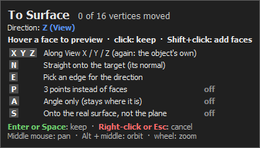

Tools / To Surface
To Surface
Slide vertices along a direction onto a plane or surface.
What it does
To Surface slides the selected vertices along one direction until they land on a face you pick. Use it to flatten vertices onto a plane, or to wrap them onto another object. It works on Editable Poly, Edit Poly and spline knots.
Hover faces to preview, click to keep, and the vertices slide onto the surface.
How to use it
- Select the vertices to move.
- Press Ctrl+Shift+D for the Align pie and choose To Surface (under Flatten).
- Pick the direction: click an edge, or press X, Y, Z or N.
- Hover a face to preview, then click it to keep. Shift+click adds more faces.
- Enter or Space keeps the result. Right-click or Esc cancels.

Options
| Key | Option | What it does |
|---|---|---|
| XYZ | Axis | Slide along that axis of the current reference coordinate system. Press the same key again for the object's own axis. |
| N | Normal | Slide straight onto the target, along its normal. |
| E | Pick an edge | Pick another edge to set the direction. |
| P | 3 points | Define the plane by clicking 3 points (vertices snap) instead of faces. |
| A | Angle only | Takes only the angle of the target; the plane goes through the middle of your selection. |
| S | Real surface | Lands on the actual surface of the clicked object instead of its flat plane. |
The viewport can still be moved while the tool runs: middle mouse pans, Alt+middle orbits, the wheel zooms.
Good to know
- Several faces picked with Shift+click give their averaged plane.
- The box shows how many vertices have moved.
- Undo is one step.